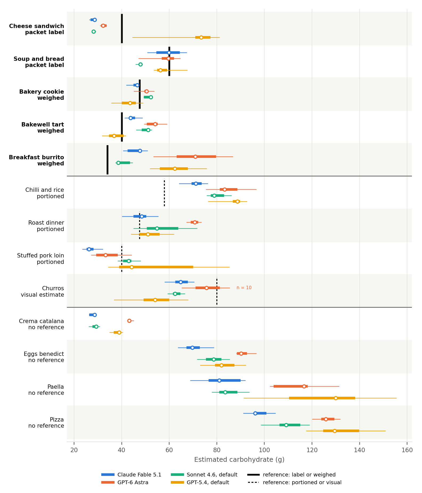
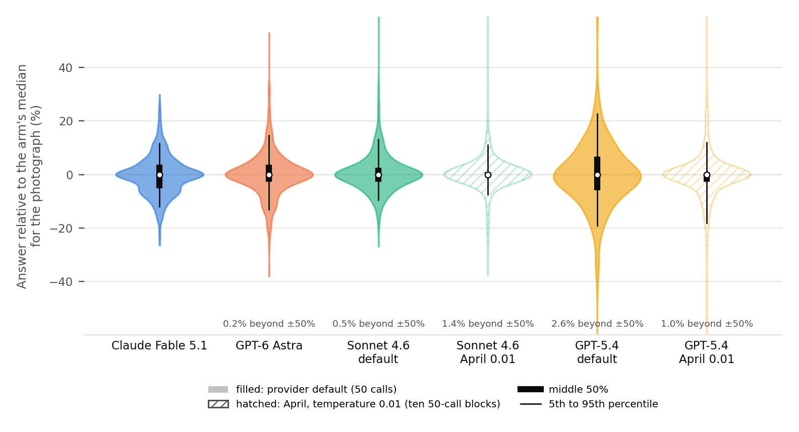
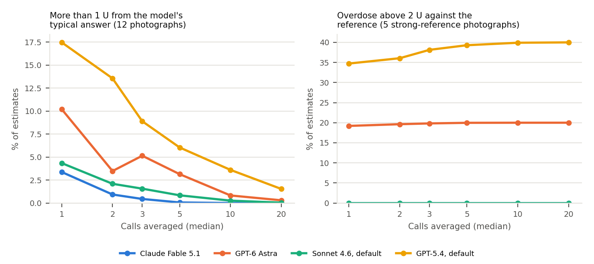
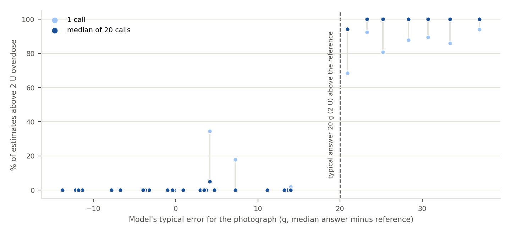

OpenAI says it’s up to us whether GPT-6 Astra is AGI. At counting carbs, it’s no better than you.
UPDATE, September 2026: This is a follow-up to I asked AI to count my carbs 27,000 times. It couldn’t give me the same answer twice. The full preprint is on Zenodo at doi.org/10.5281/zenodo.22879139.
Tim Street · Diabettech Ltd · September 2026
When OpenAI launched GPT-6 Astra this month, its president Greg Brockman said it’s not unreasonable to feel we’re now in the AGI era. Then he said he’d leave it to us to decide whether that qualifies.
Fine. I’ve decided. At counting carbs, it’s human.
Anthropic hasn’t used the word for Claude Fable 5.1. It calls it the world’s most advanced model for coding and knowledge work. So I gave both the same test I gave their predecessors in April.
Here’s what human looks like. In one study of 50 adults with type 1 diabetes, most of whom had been counting carbs for over 20 years, people were off by about 15 g a meal. That’s a fifth of what was on the plate, and most of the errors were undercounts. In another, people estimating hospital meals were out by 28 g on average.
On my five meals with solid references, Fable 5.1 was out by 7 g on average. That’s about a sixth of the meal. Astra was out by 13 g, about a third.
My meals were smaller than the ones in that study, around 44 g of carbs against 72 g, so the same miss in grams is a bigger share of the plate. Different meals and different methods too, so it’s not a straight fight. But by that yardstick Fable 5.1 has arrived. It counts carbs about as well as we do. In grams, both beat the people in those studies. As a share of the meal, Astra is still some way behind a person who’s been doing this for twenty years.
Either way, that’s the problem. Human-level is a terrible bar for something that sets an insulin dose. And it’s a different kind of human-level. People tend to undercount. Astra overcounted. Ask it twenty times and you don’t average the error away. You get the same wrong answer, every time, looking sure of itself.
Where this started
Back in April I sent 13 food photos to four AI models around 500 times each and asked them to count the carbs. The headline was simple. Ask the same model the same question about the same photo and you get a different answer.
I ended that piece with a suggestion. If an app sends each photo three to five times and shows you the median, a lot of that wobble should go away.
I’ve now tested that. It works on the random errors. It doesn’t touch the systematic ones, and those are the ones that matter most.
What changed
Two things happened since April.
Anthropic released Claude Fable 5.1 and OpenAI released GPT-6 Astra. Neither lets you set the temperature. Fable 5.1 throws an error if you try, and OpenAI’s migration guide tells you to remove it. Neither can run without reasoning switched on.
In April I held temperature at 0.01 to get the models as close to deterministic as possible. That option is gone on the new models. Any app using them gets whatever sampling the provider chooses.
So I ran the same 13 photos, with the same prompt, 50 times each through four models:
- Claude Fable 5.1, at the lowest reasoning effort it allows
- GPT-6 Astra, at the same low effort
- Claude Sonnet 4.6, with the temperature setting removed
- GPT-5.4, with the temperature setting removed
The last two are the April models. The only thing I changed for them was sampling. The prompt hash matches April’s exactly.
The meals, and how sure I am of the answers
It’s worth being clear about how much evidence there is, because the number of API calls makes it look bigger than it is.
There are 13 meals. Five have a solid reference: two where the carbs come from a packet label and three where I weighed the food. Three more were portioned but not weighed, one (the churros) is my visual estimate from a restaurant, and four have no reference at all and are only there to test consistency.
So every accuracy result below rests on five meals. Thousands of answers about five meals are still five meals.
Even the solid references aren’t exact. Packet labels have tolerances, and the weighed ones combine a weight with typical composition for that kind of food. Treat each one as good to a few grams, which matters for any meal that sits close to a threshold.
The chart below shows most of the story before any statistics. GPT-5.4 put the cheese sandwich around 33 g too high. Astra was well over on the burrito. Fable 5.1 and Sonnet 4.6 both put the sandwich about 12 g low. And on the chilli, every model was high.
Here is every model’s answer for every meal, in grams.

Take away the temperature control and the wobble gets worse
This was expected, and it happened.
Sonnet 4.6’s median variation went from 2.3% to 5.7%. GPT-5.4’s went from 7.8% to 10.1%. Both were more variable on almost every photo.
The two new models landed near Sonnet 4.6 at default settings. Fable 5.1 came in at 6.3% and Astra at 5.7%. A paired test across the 13 meals (Wilcoxon signed-rank, which is what I use for all the spread comparisons) can’t separate them. Fable 5.1 had the smallest worst case of any model, and neither new model produced a range above 5 units on any photo.

One comparison needs care. The April GPT-5.4 data were collected in lots of separate sub-batches, and the spread varied between them from 4.3% to 9.1%. So I didn’t just compare against the first 50 April calls, which happened to be the calmest. I split the April runs into ten blocks of 50 and compared against all of them. That’s a fairer test and it still shows the rise.
It also tells you something awkward. Reproducibility measured in one session can understate what you’d actually see across sessions.
Averaging fixes the scatter
I didn’t make any new calls for this bit. I simulated it by drawing batches of answers from the 50 each model gave for each photo and taking the median. I did this for 1, 2, 3, 5, 10 and 20 calls.
One caveat before the results. Resampling assumes repeated calls behave like draws from the same pot. The April GPT-5.4 batches showed that isn’t always true across sessions, so a real app making calls on different days could see more spread than this. The right test is fresh calls across days, and I haven’t done that yet.
For outlying answers, it works well.
With one call, somewhere between 3.4% and 17.5% of estimates landed more than 10 g (1 U at 1:10) away from what that model usually said. With the median of 20 calls, that fell to 1.5% or less for every model. For Fable 5.1 and Sonnet 4.6, five calls got you most of the way.
Five calls to GPT-5.4 at default settings were less scattered than a single April call at 0.01.
The really big misses went too, at least in this data. Estimates worth more than 5 U too much fell from 2.1% to zero by ten calls for Astra, and from 0.4% to zero by five for GPT-5.4. That’s zero in a resampling of 50 answers per meal. It isn’t proof it can’t happen.
Use the median, not the mean. With the mean, one wild answer drags the result away, and for Sonnet 4.6 at 0.01 averaging actually made things slightly worse.
Averaging doesn’t fix being wrong
This is the part that matters.
A word on “overdose”. Nobody was dosed here. When I say an estimate overdoses, I mean that if you bolused for it at 1 U per 10 g you’d get more than 2 U of meal insulin too much. It’s arithmetic on the estimate, not a clinical event, and it ignores IOB, corrections and anything your loop would do next.
On the five meals with solid references, here’s how often that happened.
- Astra: 19.2% with one call, 20.0% with twenty
- GPT-5.4: 34.7% with one call, 40.0% with twenty
Those look precise. They aren’t. They’re averages over five meals, and one burrito can move them a long way. Resampled over meals, Astra’s 20% could plausibly be anything from 0% to 60%, and GPT-5.4’s 40% anything from 0% to 80%.
It didn’t go down. For GPT-5.4 it went up.

The reason is obvious once you see it. Averaging pulls the answer towards whatever the model usually says for that photo. If that usual answer is close to the truth, averaging cleans up the stray bad answers. If the usual answer is wrong, averaging makes sure you get the wrong answer every time.
Look at individual meals:
- Astra’s typical answer for the breakfast burrito was 37 g too high. Its overdose rate went from 94.0% to 100%.
- Astra on the chilli, 25 g high: 80.7% to 99.9%.
- Sonnet 4.6 on the chilli, 21 g high: 68.4% to 94.2%.
Now the other side:
- GPT-5.4 on the stuffed pork loin was usually only 4 g high. Averaging took its overdose rate from 34.5% to 5.0%.
- Sonnet 4.6 on the roast dinner, 7 g high: 17.8% to zero.
Scatter goes away. Bias stays. It works in the other direction too. GPT-5.4 undercounted the churros by more than 20 g in 73.9% of single calls and 99.3% of 20-call medians.
Here’s why that worries me. With one call, a biased model gives you a number that jumps about a bit. You might notice. With twenty calls, you get nearly the same number every time. Consistency looks like correctness. It isn’t.

What about undercounting?
Most of this is about overcounting, because too much insulin is the faster danger. But the same logic applies in the other direction, so I ran the same numbers for estimates that were too low.
On the eight meals with any reference, leaving out the churros, no model was ever more than 20 g under. Not in a single one of the 50 calls, for any model.
At 10 g it’s a different picture. That’s 1 U short at 1:10, or 2 U short at 1:5. On the five solid meals, Fable 5.1 was more than 10 g low in 21.2% of single estimates and Sonnet 4.6 in 39.2%. With twenty calls, 20.0% and 40.0%. Same convergence: averaging locks in whichever side the model usually lands on.
Most of that is the cheese sandwich, which both put about 12 g low, plus Sonnet 4.6 on the soup and bread. It also means their near-zero average bias is partly low meals cancelling high ones, as Figure 1 shows.
The churros are the outlier. GPT-5.4 was more than 20 g under in 74% of single calls and 99.3% of 20-call medians, against 12% for Fable 5.1 and 8% for Sonnet 4.6. That reference is my visual estimate, though, so I wouldn’t lean on it.
Too little insulin usually means a high rather than a low. Less immediate, but not nothing, and it matters if you’re pre-bolusing precisely.
Your ratio changes everything
All of those overdose figures use 1 U per 10 g. That’s an illustration, not you.
If you take 1 U per 5 g, a 10 g overestimate is a 2 U overdose. At that ratio, every model overdosed in at least 15% of single estimates. That includes Fable 5.1 (16.0%) and Sonnet 4.6 (15.2%), which were at zero on 1:10. Averaging pushed Fable 5.1 up to 19.4%.
If you take 1 U per 20 g, only Astra still had a meaningful rate.
So a model that looks harmless for one person isn’t for another. The fewer grams each unit covers for you, the more insulin the same carb error is worth, in either direction.
Is Fable 5.1 the most accurate? Maybe. I can’t show it.
On the five strong-reference photos, Fable 5.1 had a mean absolute error of 7.0 g with almost no bias (+0.3 g). Sonnet 4.6 was at 8.8 g, also unbiased. Astra was 13.2 g and GPT-5.4 was 14.7 g, and both overestimated by about 9 to 10 g on average.
As a share of each meal, averaged over the five, that’s 17.5% for Fable 5.1, 20.3% for Sonnet 4.6, 35.2% for Astra and 38.2% for GPT-5.4. For comparison, the adults in the Brazeau study were out by about 21%. The ranges are wide here too: Astra’s 35% could be anything from 9% to 74% on five meals.
That looks like a ranking. It isn’t one.
When I compare models meal by meal, every difference has a confidence interval that crosses zero. As a rough planning guide, and it’s rough because it’s estimated from so few meals, spotting a 5 g difference reliably would take something like 13 meals for Fable 5.1 against Sonnet 4.6, 46 for Fable 5.1 against Astra and 57 for Astra against GPT-5.4. Confirming the 1.8 g gap I actually saw between Fable 5.1 and Sonnet 4.6 would take around 94.
I have five. The low sandwich and the high burrito also show why a single average hides a lot. Anyone claiming one of these models is clearly best at carb counting on a test set this size is overreaching. That includes me.
Removing the temperature control didn’t make the April models less accurate, for what it’s worth. It just made them less consistent.
Astra sometimes writes numbers as words
This one surprised me.
On the churros photo, Astra wrote the carbs per 100 g as “forty” or “Forty” in 39 of 50 calls. Once it wrote “progressively55.0”. A JSON number written as a word breaks the parse, so there’s no answer.
On that meal, Astra failed 80% of the time. If each try were independent you’d need five on average, and three in a row would all fail about half the time. They may well not be independent. If something about that photo reliably trips it, retrying may just fail again. On the other 12 photos it failed in about 1% of calls, and a retry would fix it.
A strict parser turns this into no answer. A lenient one that tries to repair the output could turn it into a wrong answer. If you’re building one of these apps, reject anything that fails validation and tell the user.
My own April code had a similar weakness with malformed JSON, which could have recorded a broken response as 0 g. It never happened in the April data, but it did twice with Fable 5.1 here, so I’ve fixed it. I also had to fix the Anthropic reader, which grabbed the first content block. On a model that always thinks, that’s the thinking block, and every Fable 5.1 answer would have been lost.
It does know what a Bakewell tart is now
In April, Sonnet 4.6 called the Bakewell tart a Linzer torte every time. Both new models got the Bakewell tart and the crema catalana right, which only Gemini 3.1 Pro managed before.
They have their own quirks. Fable 5.1 called the stuffed pork loin chicken in 46% of answers. Astra counted the burrata salad on the neighbouring plate in the pizza photo 96% of the time.
On this set, misidentification barely moved the carb numbers. Pork and chicken carry almost no carbs, and the burrata added 3 to 6 g. The exception was Astra on the pork loin, where answers that named pork came in 8.9 g lower. The identification errors don’t explain the accuracy gaps.
And it isn’t cheap
At batch prices as of September 2026, three meals a day for a year:
| Model | Per 1,000 | 1 call | 3 calls | 5 calls | 20 calls |
|---|---|---|---|---|---|
| Fable 5.1 | $60.63 | $66 | $199 | $332 | $1,328 |
| Astra | $62.38 | $68 | $205 | $342 | $1,366 |
| Sonnet 4.6 | $17.83 | $20 | $59 | $98 | $390 |
| GPT-5.4 | $11.76 | $13 | $39 | $64 | $258 |
The new models cost 3.4 to 5.3 times as much per answer. An app that needs an answer straight away pays real-time prices, which double those numbers.
Five calls, which gets most of the benefit for Fable 5.1 and Sonnet 4.6, costs about $330 a year on a flagship model, or $100 on Sonnet 4.6. Twenty calls on a flagship runs to around $1,300, or more like $2,600 if you want the answer before your dinner goes cold. And none of it stops the model confidently overcounting your chilli.
A note on who did the work
I used Claude Code, which is an Anthropic product, for the benchmark code, the analysis and drafting the paper. Anthropic also makes Fable 5.1 and Sonnet 4.6, two of the models being tested.
I’ve tried to make that relationship matter as little as possible. The prompt is April’s, taken from iAPS before any of this started, and its hash is unchanged. All the code that turns a response into a number is shared across every model and doesn’t know which one it’s looking at. The one Anthropic-specific fix recovers answers that would otherwise have been thrown away and doesn’t change any answer that was read.
Everything is public. The code, every raw response and the scripts behind every table are on GitHub. The repo has 54 unit tests, including checks that the thinking-block reader still reads normal answers and that broken JSON is a failure rather than 0 g, and they pass on a fresh copy. The extra analyses in this article (undercounting and the meal chart) run on the same public data.
Public isn’t the same as independently checked, though. It wasn’t pre-registered and nobody independent has audited it. If you want to, please do.
What this means for you
So is it AGI? If the test is doing a job as well as a person, then on carbs Fable 5.1 is near enough, and Astra, the one whose maker raised the question, is still learning. A purpose-built phone app got within about a gram of Astra’s average back in 2016, but let’s not spoil the party.
But you already had a person doing this job. You. You get it wrong too, but you know when you’re guessing. You know the chilli was a big bowl and the sandwich was thick-cut. The model gives you a number with no sign of whether it’s guessing, and if you ask it twenty times it gives you that number twenty times.
Averaging is still worth doing. It gets rid of the random bad answer, and in this data it got rid of the really big ones above 5 U. It does nothing about a model that consistently gets a meal wrong.
So if you’re using one of these tools, or building one:
- Look at the number and ask whether it makes sense for that plate. Every time.
- Be most careful if each unit covers only a few grams for you. The same error means more insulin.
- Watch for meals where the app always gives you the same answer and it always feels a bit high. That’s bias, not scatter.
- If you build apps, use the median, validate strictly and tell the user when you haven’t got an answer.
On these 13 meals, the errors were big enough that I wouldn’t dose from either new model without checking. Nor the old ones.
Preprint: Street T (2026). Carbohydrate estimates from food photographs by Claude Fable 5.1 and GPT-6 Astra: a September 2026 update to a reproducibility benchmark. https://doi.org/10.5281/zenodo.22879139
Code and data: https://github.com/tim2000s/llm-food-benchmark-2026-09
Original April article: I asked AI to count my carbs 27,000 times
Other sources
Brockman on the AGI era: Gizmodo, OpenAI claims we’re in the ‘AGI era’ with release of GPT-6 Astra; TechTimes, GPT-6 Astra goes live (September 2026).
Anthropic (2026). Introducing Claude Fable 5.1 and Claude Mythos 5.1.
Brazeau AS et al. (2013). Carbohydrate counting accuracy and blood glucose variability in adults with type 1 diabetes. Diabetes Research and Clinical Practice. pubmed.ncbi.nlm.nih.gov/23146371
Rhyner D et al. (2016). Carbohydrate estimation by a mobile phone-based system versus self-estimations of individuals with type 1 diabetes mellitus: a comparative study. Journal of Medical Internet Research. pmc.ncbi.nlm.nih.gov/articles/PMC4880742